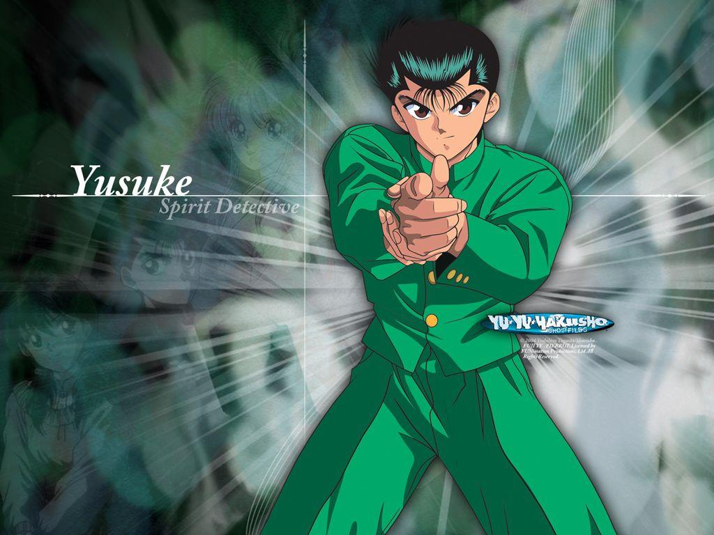
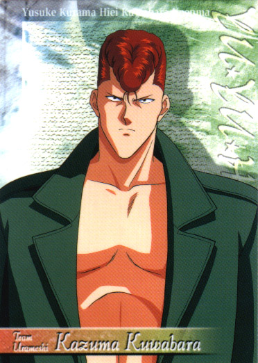
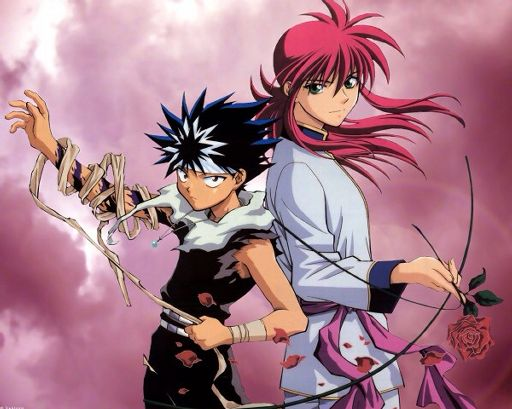

Yusuke Urameshi
Yusuke was the toughest student at his high school, and a stereotypical delinquent. He cut class, gambled, and often got into fights, especially with his rival Kazuma Kuwabara. One day while skipping class, Yusuke saw a kid wandering into the street to get a ball, and a car was about to hit him. To save the kid, Yusuke jumped into the road and pushed him out of the way, getting killed by the car in the process. However, this wasn't the end, as Yusuke found himself as a ghost floating above the scene of his death. He encountered a girl named Botan floating beside him, who claimed she was a grim reaper. Botan explained that, since Yusuke wasn't planned to die that day, that Koenma, ruler of the spirit world, would give Yusuke another chance to be alive. Yusuke accepted, and after completing the objective he needed, Yusuke was brought back to life. With his second chance at life, Yusuke was made into a Spirit Detective, a human with spiritual powers who stops demons and spirits who managed to get to the mortal world.
Kazuma Kuwabara
Kuwabara is the second-toughest kid and self-proclaimed punk at Sarayashiki Junior High School, and he is always trying to usurp Yusuke Urameshi's position as the toughest. He claims to have never lost a fight until he met Yusuke. He leads a gang consisting of himself, Kirishima, Okubo, and Sawamura (renamed Komada In the English dub). He has a soft spot for kittens (including his own, Eikichi) and an iron clad code of honor. When he first meets Botan, he temporarily develops a minor crush on her (in the anime only), but later harbors intense feelings for the ice apparition Yukina, but is unaware that she's Hiei's twin sister.
Kurama & Hiei
Kurama is the most calculating, cunning and analytical member of the main characters and perhaps in the whole series. He is able to carefully look past his feelings and see the real situation at hand, which has been demonstrated on more than one occasion. He is extremely perceptive, able to quickly recognize the patterns and mistakes that his opponents make, which gives him an edge. In battle, while his preference is to concoct strategies based on deduction of his opponents' fighting abilities and style, his natural battle instincts are also highly tuned. He is capable of slashing another person's head off in just an instant, relying only on impulse. However, his care for his friends and family are the backbone of his fighting drive, as he would sacrifice just about anything to protect them and thus making him a reliable teammate despite his cunning front. Kurama has a very kind heart, and several villains in the series will use this ploy against him in order to beat him.Hiei prefers to keep his distance from others, so he often comes across as aloof and elusive. He has a rather cynical and even misanthropic view of the world around him, often belittling and mocking humans and their emotions and the significance they place on friendship and life. And while he is relatively taciturn, he occasionally squabbles with and insults his teammates, especially Kuwabara. It is obvious that deep down he holds a certain amount of respect and kinship for his teammates, but seems to be closest to Kurama and Yusuke. While he holds an affinity of kinship towards demons, this goes as equally far as his preference for humans, despising weaker demons, including braggarts and "tourists" who lack impetus for a degree of respect from him.